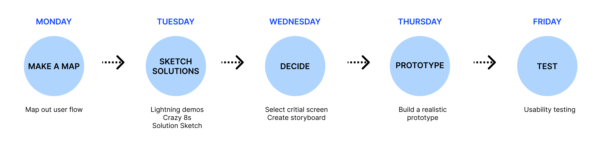

GramCity
Project type:
Personal project
GV Design Sprint
Scope:
Persona
Competitive analysis
User flow
Low-fi, Hi-fi mockup
Usability testing
My role:
UX/UI Designer
Duration:
5 days
September, 2022
WHAT IS THE CONTEXT?
GramCity wants to explore how they can help their users find great photo-ops near them. GramCity wants to design a feature to help users find awesome places to take photos, wherever they are.
THE PROBLEM
Users spend a lot of time searching for the good photo spots that would meet their expectations and plan for the trip. They also don’t want to miss out on good photo spots that are already near them.
THE SOLUTION
The solution is to help users find photo spots based on location and provide information. The solution also has a planning feature to help users make a plan for a trip.
MY ROLE
I followed the design sprint process which is a five-day process developed by Google Ventures to answer the business questions through synthesizing, designing, prototyping and testing the ideas with potential users.
DESIGN APPROACH
SPRINT DAY 1 - MAPPING
PERSONA
I started off the first day of the design sprint reviewing all the information provided. This included user interview highlights and a rough persona which I have reorganized below.
MAPPING USER FLOW
SPRINT DAY 2 - SKETCH SOLUTIONS
LIGHTNING DEMOS
For the second day of the design sprint, I started off looking to other products that are solving a problem similar to the one I was trying to solve. I studied trip planning apps, local guide apps, photo sharing social media app, and map/location based service provider finder apps.
• Foursquare: I was mainly inspired by how they organized the detail page of the place.
• Visit A City: I was inspired by their “Explore” page and how they organized “My Plans”.
• Roadtrippers: I studied how users can make a trip plan and how the app shows the plan on the map.
• Instagram: I observed their UI - particularly their location based posts and tags.
• OpenTable: I looked at their UI - particularly the search based on location.
• Geolocation apps: Geolocation apps make users' experiences more comfortable and amusing. Due to their usefulness, location-based services occupy an important niche in the mobile app market. I learned that key features include GPS coordinates, location tracking, and map integration through research.
CRAZY 8’S
With all the insights from the research as well as observing other products, I decided that the critical screen would be the one that displays map view (location based) with photo spots with a brief information of one selected spot. I went on to do Crazy 8s and sketched out 8 screens to try out different variations of the most critical screen.
SOLUTION SCREENS
I sketched the screens that would come before and after the critical screen. The screen that would come before the critical screen is a notification pop-up asking users to turn on “allow always” in location settings so that the app can notify users if photo spots are nearby. The screen that would come after the critical screen is a detail page about the photo spots providing a brief explanation about the spot, information, rating, reviews, photos and tips.
SPRINT DAY 3 - DECIDE & CREATE STORYBOARD
IDEATING
After establishing the critical screen, I sketched out the screens that follow the critical screen. Throughout creating a storyboard, I ensured to meet the Personas’ goals.
Screen #1
Home screen has a search bar that is located close to the center so that users can easily notice the search bar and use it to find a location they want.
Screen #2
Explore tab gives several options that help users to find photo spots according to their needs.
Screen #3
One important feature is that users can get notified if there’s a photo spot nearby so they wouldn’t miss the great photo spots with no effort.
Screen #4
Users can view all the photo spots on the map at once. This will help users to figure out the locations.
Screen #5
Users can check all the information about the places, address, opening hours, ratings, reviews, tips, and photos taken from others. This will help users to decide whether they will visit or not and reduce the risk of getting disappointed after visiting the place.
Screen #6, 7, 8
Another important featureis making a plan and seeing a route on the map. This will help users to solidify the plan, share with others, visualize and travel in an efficient route.
SPRINT DAY 4 - PROTOTYPE
In order to test the functionality of the design, I built out the bare essential screens of the prototype. The key was to work as fast and as lean as I can, while making sure the design is a realistic façade. I quickly created a realistic prototype of the screens I sketched in an 8 panel storyboard. I chose dark mode screens to highlight the photos because photos are one of the important aspects in the app. Users of GramCity are also very likely to be users of Instagram which uses dark mode screens. By using the same dark mode screens, users feel familiar to the screens and feel like using the app is an extension of Instagram activity which makes them feel comfortable with overall experience with the app.
SPRINT DAY 5 - TEST & VALIDATE
USABILITY TESTING
Participants: I recruited five individuals ranging from the age 25-31 who were comfortable navigating digital interfaces and regularly use mobile apps. All five like to go to instagrammable places, take photos and post on Instagram.
FINDINGS
1. Participants thought ratings, reviews, and the number of reviews were important to check to decide whether going to the photo spots or not.
2. Participants’ common pattern was to bookmark the spots first. They go through spots, bookmark all the spots they are interested in, and decide later whether to add to a plan or not. So, it was a good decision to have both bookmark and plan on the bottom menu bar for users’ easy navigation.
3. Participants found the options like “Most Popular”, “Trending”, “Best Reviews” and “Near Me” were helpful to quickly find photo spots that they would be interested in.
4. All participants said that the app would be useful to find photo spots.
5. Participants liked that the app showed the route of the plan.
6. Because of the timeline to make MVPs, I didn’t add a page of “Get direction”, but the participant wanted to check the direction from where the participant is as well as from place to place so that she doesn’t have to check Google Map. Also, the participant wanted to see how long it takes to get to the place.
7. One participant usually checks both Google and Instagram to see the photo spots and how people take good pictures.
PLAN FOR NEXT STEP
1. Adding “Get direction” page.
2. Adding Instagram hashtag links.
3. Adding the most mentioned words under reviews.
4. Adding a color outline around the picture on the map to make the most popular places more pop out or put a star icon for a must visit spot.
WHAT I LEARNED
It was a new experience to use GV design sprint to rapidly design and test the prototype. I thoroughly enjoyed the entire process and it was satisfying to be able to design solutions quickly, test the prototype and get feedback. GV design sprint helped me to focus on the prioritized functions and I learned that good solutions don’t always take a long process.